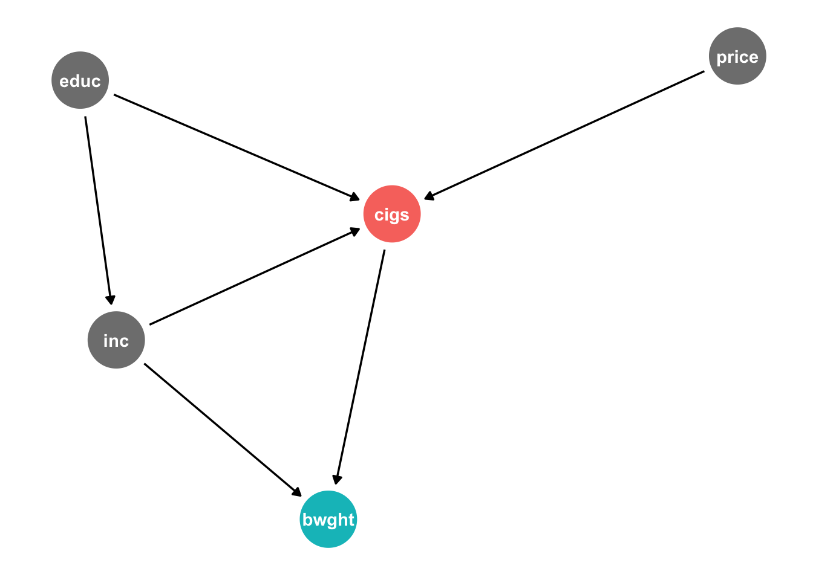

# run or edit this chunk
mlb <- read_csv("http://metricsf22.classes.ryansafner.com/files/data/heightwages.csv")Problem Set 4
Warning
This assignment is due by Friday november 11 by email.
Please read the instructions for completing and submitting homeworks.
The PDF is useful if you want to print out the problem set and write on it. The R Project is a zipped .zip file which contains a .qmd file to write answers in, and the data, all in a logical working directory. (See this resource for help unzipping files). You can also just write an .R file in the project if you don’t want to use markdown. If you use the cloud project, I have already installed tidyverse and tinytex (to produce pdfs).
Answers
Theory and Concepts
Question 1
In your own words, explain the fundamental problem of causal inference.
Question 2
In your own words, explain how properly conducting a randomized controlled trial helps to identify the causal effect of one variable on another.
Question 3
In your own words, describe what omitted variable bias means. What are the two conditions for a variable to bias OLS estimates if omitted?
Question 4
In your own words, describe what multicollinearity means. What is the cause, and what are the consequences of multicollinearity? How can we measure multicollinearity and its effects? What happens if multicollinearity is perfect?
Question 5
Explain how we use Directed Acyclic Graphs (DAGs) to depict a causal model: what are the two criteria that must hold for identifying a causal effect of \(X\) on \(Y\)? When should we control a variable, and when should we not control for a variable?
Theory Problems
For the following questions, please show all work and explain answers as necessary. You may lose points if you only write the correct answer. You may use R to verify your answers, but you are expected to reach the answers in this section “manually.”
Question 6
A pharmaceutical company is interested in estimating the impact of a new drug on cholesterol levels. They enroll 200 people in a clinical trial. People are randomly assigned the treatment group or into the control group. Half of the people are given the new drug and half the people are given a sugar pill with no active ingredient. To examine the impact of dosage on reductions in cholesterol levels, the authors of the study regress the following model:
\[\text{cholesterol level}_i = \beta_0+\beta_1 \text{dosage level}_i + u_i\]
For people in the control group, dosage level\(_i=0\) and for people in the treatment group, dosage level\(_i\) measures milligrams of the active ingredient. In this case, the authors find a large, negative, statistically significant estimate of \(\hat{\beta_1}\). Is this an unbiased estimate of the impact of dosage on change in cholesterol level? Why or why not? Do you expect the estimate to overstate or understate the true relationship between dosage and cholesterol level?
Question 7
Data were collected from a random sample of 220 home sales from a community in 2017.
\[\widehat{Price}=119.2+0.485 \, BDR+23.4 \, Bath+0.156 \, Hsize+0.002 \, Lsize+0.090 \, Age\]
| Variable | Description |
|---|---|
| \(Price\) | selling price (in $1,000s) |
| \(BDR\) | number of bedrooms |
| \(Bath\) | number of bathrooms |
| \(Hsize\) | size of the house (in ft\(^2)\) |
| \(Lsize\) | lot size (in ft\(^2)\) |
| \(Age\) | age of the house (in years) |
Part A
Suppose that a homeowner converts part of an existing living space in her house to a new bathroom. What is the expected increase in the value of the house?
Part B
Suppose a homeowner adds a new bathroom to her house, which also increases the size of the house by 100 square feet. What is the expected increase in the value of the house?
Part C
Suppose the \(R^2\) of this regression is 0.727. Calculate the adjusted \(\bar{R}^2\).
Part D
Suppose the following auxiliary regression for \(BDR\) has an \(R^2\) of 0.841.
\[\widehat{BDR}=\delta_0+\delta_1Bath+\delta_2Hsize+\delta_3Lsize+\delta_4Age\]
Calculate the Variance Inflation Factor for \(BDR\) and explain what it means.
Question 8
A researcher wants to investigate the effect of education on average hourly wages. Wage, education, and experience in the dataset have the following correlations:
| Wage | Education | Experience | |
|---|---|---|---|
| Wage | 1.0000 | ||
| Education | 0.4059 | 1.0000 | |
| Experience | 0.1129 | -0.2995 | 1.0000 |
She runs a simple regression first, and gets the results:
\[\widehat{\text{Wage}} = -0.9049 + 0.5414 \, Education\]
She runs another regression, and gets the results:
\[\widehat{\text{Experience}} = 35.4615 - 1.4681 \, Education\]
Part A
If the true marginal effect of experience on wages (holding education constant) is 0.0701, calculate the omitted variable bias in the first regression caused by omitting experience. Does the estimate of \(\hat{\beta_1}\) in the first regression overstate or understate the effect of education on wages?
Part B
Knowing this, what would be the true effect of education on wages, holding experience constant?
Part C
The \(R^2\) for the second regression is 0.0897. If she were to run a better regression including both education and experience, how much would the variance of the coefficients on education and experience increase? Why?
R Questions
Answer the following questions using R. When necessary, please write answers in the same document (rendered to html or pdf, typed .doc(x), or handwritten) as your answers to the above questions. Be sure to include (email or print an .R file, or show in your rendered quarto document) your code and the outputs of your code with the rest of your answers.
Question 9
Download and read in heightwages.csv dataset. If you don’t want to download/upload it, you can read it in directly from the url by running this chunk:
This data is a part of a larger dataset from the National Longitudinal Survey of Youth (NLSY) 1979 cohort: a nationally representative sample of 12,686 men and women aged 14-22 years old when they were first surveyed in 1979. They were subsequently interviewed every year through 1994 and then every other year afterwards. There are many included variables, but for now we will just focus on:
| Variable | Description |
|---|---|
wage96 |
Adult hourly wages ($/hr) reported in 1996 |
height85 |
Adult height (inches) reported in 1985 |
height81 |
Adolescent height (inches) reported in 1981 |
We want to figure out what is the effect of height on wages (e.g. do taller people earn more on average than shorter people?)
Part A
Create a quick scatterplot between height85 (as \(X)\) amd wage96 (as \(Y)\).
Part B
Regress wages on adult height. Write the equation of the estimated OLS regression. Interpret the coefficient on height85.
Part C
How much would someone who is 5’10” (70 in) be predicted to earn per hour, according to the model?
Part D
Would adolescent height cause an omitted variable bias if it were left out? Explain using both your intuition, and some statistical evidence with R.
Part E
Now add adolescent height to the regression, and write the new regression equation below, as before. Interpret the coefficient on height85.
Part F
How much would someone who is 5’10” in 1985 and 4’8” in 1981 be predicted to earn, according to the model?
Part G
What happened to the estimate on height85 and its standard error?
Part H
Is there multicollinearity between height85 and height81? Explore with a scatterplot. Hint: to avoid overplotting, use geom_jitter() instead of geom_point() to get a better view of the data.
Part I
Quantify how much multicollinearity affects the variance of the OLS estimates on both heights. Hint: You’ll need the vif command from the car package.
Part J
Reach the same number as in part I by running an auxiliary regression.
Hint: There’s some missing wage96 data that may give you a different answer, so take the data and filter(!is.na(wage96)) before running this regression — this will include only observations for wage96 that are not NA’s.
Part K
Make a regression table from part B and D using modelsummary.
Question 10
Install and load the wooldridge package. This package contains datasets used in Jeffrey Wooldridge’s Introductory Econometrics: A Modern Approach (the textbook that I used in my econometrics classes years ago!).
We will use the bwght data from wooldridge, which comes from The 1988 National Health Interview Survey., used in J. Mullahy (1997), “Instrumental-Variable Estimation of Count Data Models: Applications to Models of Cigarette Smoking Behavior,” Review of Economics and Statistics 79: 596-593.
Let’s just look at the following variables:
| Variable | Description |
|---|---|
bwght |
Birth Weight (ounces) |
cigs |
Cigarettes smoked per day while pregnant (1988) |
motheduc |
Mother’s education (number of years) |
cigprice |
Price of cigarette pack (1988) |
faminc |
Family’s income in $1,000s (1988) |
We want to explore how a mother smoking during pregnancy affects the baby’s birthweight (which may have strong effects on outcomes over the child’s life).
Just to be explicit about it, assign this as some dataframe (feel free to change the name), i.e.:
# run or edit this chunk
births <- bwght # feel free to rename whatever you want for the dataframePart A
Make a correlation table for our variables listed above.
Hint: select() these variables and then pipe this into cor(., use = "pairwise.complete.obs") to use only observations for which there are data on each variable (to avoid NA’s).
Part B
Consider the following causal model:
dagify(bwght ~ cigs + inc,
cigs ~ price + educ + inc,
inc ~ educ,
exposure = "cigs",
outcome = "bwght") %>%
tidy_dagitty(seed = 256) %>%
ggdag_status()+
theme_dag_blank()+
theme(legend.position = "none")
Note what we are hypothesizing:
bwghtis caused bycigsandinccigsare caused byprice,educ, andincincis caused byeduc
See also how this is written into the notation in R to draw (plot) the DAG.
Create this model on dagitty.net. What does dagitty tell us the testable implications of this causal model?
You can answer this using dagitty.net, and/or R.
Part C
Test each implication given to you by dagitty.
- For independencies, e.g. \((x \perp y)\): run a regression of \(y\) on \(x\).
- For conditional independencies, e.g. \((x \perp y | z, a)\): run a regression of \(y\) on \(x, z, a\).
For each, test against the null hypothesis that the relevant coefficient \((\beta_1) =0\) (i.e. \(x\) and \(y\) are indeed independent).
Does this causal model hold up well?
Part D
List all of the possible pathways from cigs to bwght. Which are “front-doors” and which are “back-doors?” Are any blocked by colliders?
You can answer this using dagitty.net, and/or R.
Part E
What is the minimal sufficient set of variables we need to control for in order to causally identify the effect of cigs on bwght?
You can answer this using dagitty.net, and/or R.
Part F
Estimate the causal effect by running the appropriate regression in R.
FYI, on dagitty.net, you can change a variable on the diagram to be “adjusted” (controlled for) by clicking it and then hitting the A key.
Part G
We saw some effect between faminc and cigprice. Perhaps there are unobserved factors (such as the economy’s performance) that affect both. Add an unobserved factor u1 to your dagitty model.
FYI, on dagitty.net, you can make a variable be “unobserved” by double-clicking it and then hitting the U key.
Part H
Perhaps our model is poorly specified. Maybe motheduc actually has a causal effect on bwght? Tweak your model on dagitty.net to add this potential relationship. What testable implications does this new model imply?
Part I
Test these implications appropriately in R, like you did in Part C. Does this model hold up well?
Part J
Under this new causal model, list all of the possible pathways from cigs to bwght. Which are “front-doors” and which are “back-doors?” Are any blocked by colliders?
You can answer this using dagitty.net, and/or R.
Part K
Under this new causal model, what is the minimal sufficient set of variables we need to control in order to causally identify the effect of cigs on bwght?
You can answer this using dagitty.net, and/or R.
Part L
Estimate the causal effect in this new model by running the appropriate regression in R. Compare your answers to those in part F.
Part M
Try out drawing this model using the ggdag package in R. See my DAG in question 3 for an example.